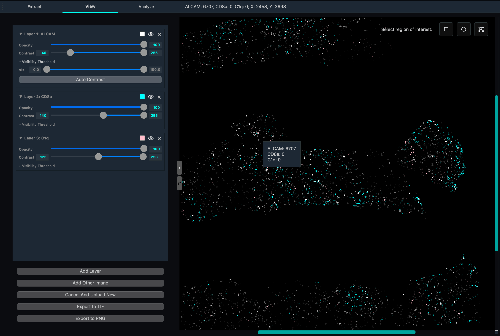

View Tab
The View tab provides visualization and exploration capabilities for protein expression data and multi-channel microscopy images. Researchers can layer multiple protein channels, adjust display properties per layer, and select regions for downstream analysis.
{kind=link}

Interface Overview
The View tab consists of two main sections:
Layer Control Panel (left): Manage individual protein/image layers and their display properties.
Visualization Canvas (right): The combined image with interactive region selection tools.
Loading Data
Before adding visualization layers, load your processed data:
Open Image: Load the cell segmentation image output from the Extract tab (typically a StarDist PNG or TIFF mask).
Open Cell Data: Load the per-cell protein expression CSV or Excel file produced by Quantification.
Scale Down Factor: Reduce the image resolution for performance when working with very large images.
Click Apply to prepare the data for visualization.
Layer Management
Add Layer
The Add Layer button lets you select a protein channel from your loaded cell data and add it to the canvas as a new visualization layer. Each protein channel is displayed independently and can be manipulated without affecting others.
Add Other Image
Use this button to import an external image (PNG, JPG, TIFF) as an additional overlay layer. Useful for adding reference images, brightfield overlays, or annotations.
Layer Controls
Each layer has its own control panel:
Control |
Description |
|---|---|
Opacity |
Slider (0–100%). Adjusts transparency so underlying layers remain visible. |
Contrast |
Dual-slider for minimum and maximum intensity thresholds. Values below the minimum appear black; values above the maximum are shown at full brightness. Narrow the range to reveal faint signals. |
Tint Color |
Opens a color picker. Apply a color tint to the grayscale channel data. Common choices: red, green, blue (primary), cyan, magenta, yellow (complementary), or custom. |
Visibility |
Toggle button to show or hide a layer without removing it. Useful for comparing expression patterns. |
Visibility Threshold |
Hides cells not within quantile range. Useful for sepearting high/low populations. Use auto contrast after adjust threshold to see clearer view of low populations. |
Delete Layer |
Permanently removes the layer from the stack. |
Region Selection Tools
In the top-right corner of the canvas, selection tools let you define regions of interest that feed into the Analysis tab:
Rectangle Selection (shortcut:
R)Circle Selection (shortcut:
C)Polygon/Lasso Selection (shortcut:
L)
Export
Export the current canvas view as an image file:
Export to PNG: Saves a flattened RGB rendering of all visible layers with current opacity, contrast, and tint settings applied.
Export to multi-channel TIFF: Saves each layer as a separate channel in a multi-channel TIFF file, preserving the full intensity range with applied contrast settings.
UMAP Launcher
The UMAP dimensionality reduction visualizer can be launched from the View tab. This opens the UMAP interface which projects the per-cell, multi-protein expression data into a 2D plot for cluster exploration. See the Analysis Tab page for full details on the UMAP visualization.
Technical details
JIT Compilation: The protein layer rendering algorithm uses just-in-time compilation to maximize performance when compositing many layers.
Contrast adjustment: Uses percentile-based intensity windowing. The raw pixel values are not modified — only the display mapping is adjusted.
Layer compositing: Alpha compositing blends multiple protein layers. Layers higher in the stack render on top with their opacity applied first.
Color mapping: Tint colors are applied by multiplying each channel of the grayscale image by the selected RGB tint vector.
Usage Tips
Assign complementary colors to proteins that co-localize (e.g. red + cyan) so overlap appears as a distinct hue.
For faint signals, narrow the contrast range (move both sliders toward the signal peak) to make them more visible.
Toggle visibility on and off to compare channel-by-channel without rearranging layers.
Use Scale Down Factor for initial exploration on large images; switch to full resolution before exporting.